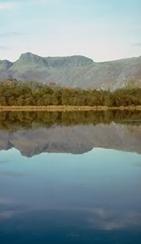
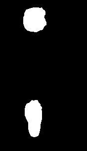

In this assignment, we explore gradient-domain processing through a technique called Poisson image editing, which is used to seamlessly blend a part of source image into a destination image using a mask.
This is motivated by standard non-seamless cloning, which is effectively a simple copy-and-paste of the source pixels into a destination, without any modification. The results are jarring and immediately stand out to the human eye, since this often leaves abrupt gradients at the transition between the new source pixels and the neighboring destination pixels.
It turns out that human perception tends to be more sensitive to gradients than to intensity values in an image. So, we can formulate this as a problem in which we try to solve for new target pixels at the destination (where the source pixels would be placed) such that we maximally preserve the existing gradients while also trying to minimize the transition gradient between the destination image and the new source region.
This Poisson problem can be discretized into a linear system of equations, which are shown below. Here, the function f represents a pixel value that we are solving for, while f* represents the existing pixel value in the destination image. v represents the discrete gradient in the source image (i.e. difference between neighboring pixel values).
For each pixel p in the masked region, we examine the 4 neighboring pixels. We add a new equation to the linear system that constrains the gradient from the pixel p to each of its neighbors in the source image. Further, we add a boundary constraint that pulls a boundary pixel p' closer to the value of the neighboring destination pixels, which results in a solution that is more "seamless" at the masked region.
The resulting linear system of equations has one equation for each pixel in the mask. It turns out to be a very large, but very sparse linear system, which allows us to quickly compute a solution using an iterative least-squares solver for sparse matrices. Solving the system produces a vector of values representing the function f above, which are the new pixel values to be placed into the masked region of the destination image.
Mapping the results of f back into pixel coordinates, we replace the corresponding pixels in the destination image and obtain our final result.
It should also be noted that color images have 3 color channels, R, G, and B. As such, we have to perform the above computation for each color channel and then combine the results into RGB pixels before producing the final output.
First, let's reproduce some of the results found in the Perez et al. paper.
|
|

|

|
|